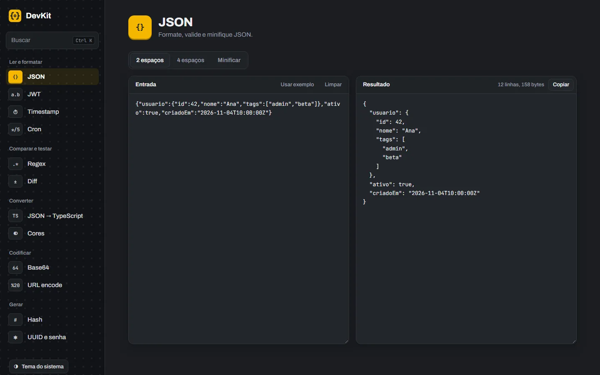
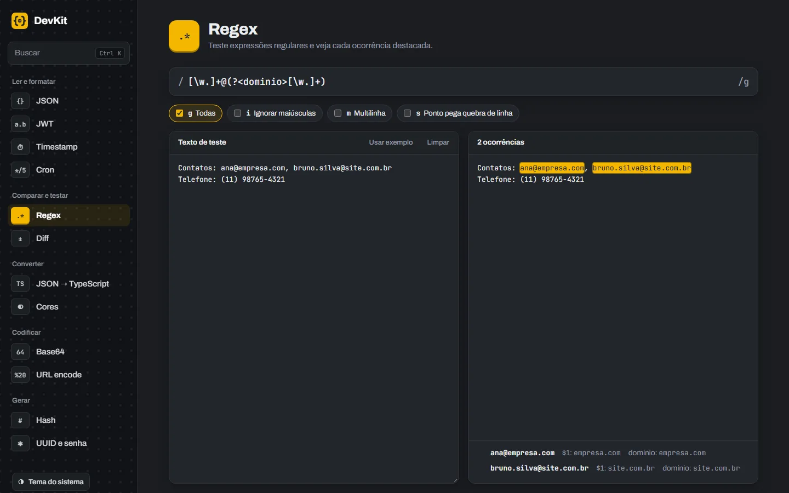
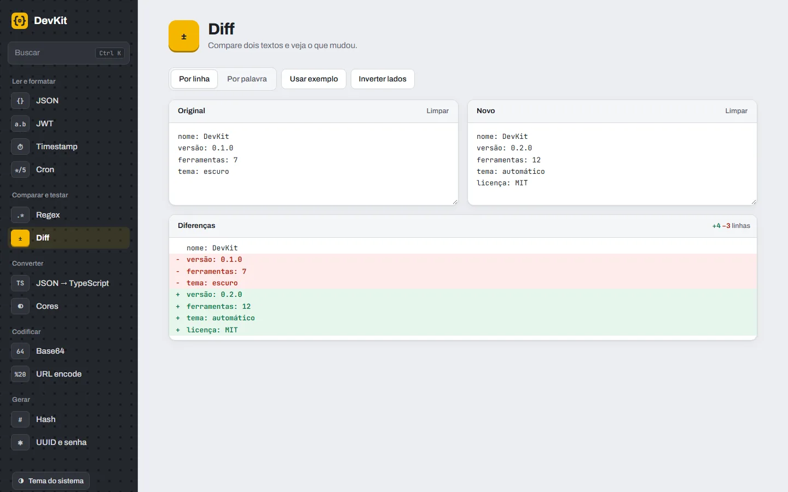
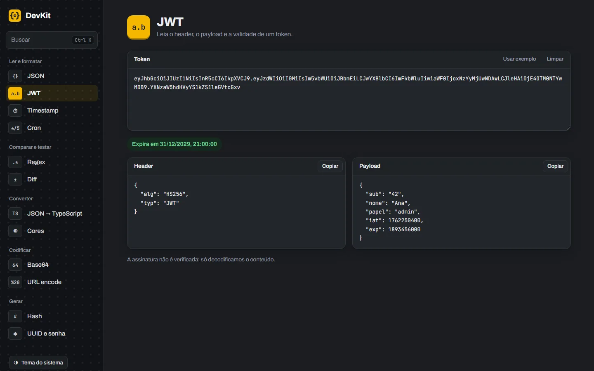
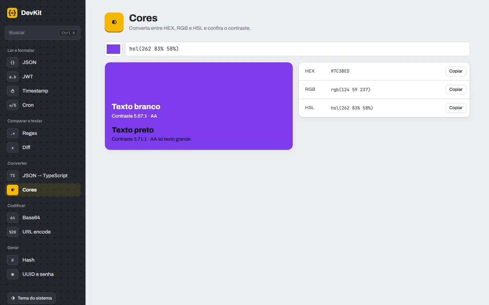
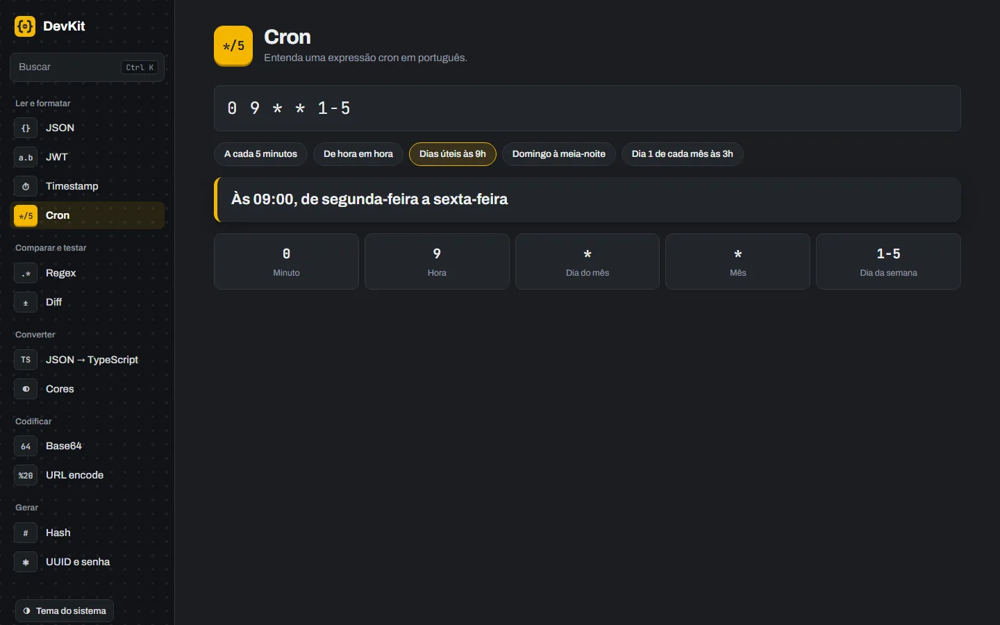

DevKit
Caixa de ferramentas para desenvolvedores que roda toda no navegador: JSON, JWT, regex, diff, cores, cron e mais, sem nada sair da sua máquina.A developer toolbox that runs entirely in the browser: JSON, JWT, regex, diff, colors, cron and more, with nothing leaving your machine.


 0
0

O que fazWhat it does
- Ler e formatar: JSON (2 ou 4 espaços ou minificado, com o erro de sintaxe ao vivo), JWT com expiração, Timestamp e Cron explicado campo por campo.
- Read and format: JSON (2 or 4 spaces or minified, with the syntax error live), JWT with expiration, Timestamp and Cron explained field by field.
- Comparar e testar: Regex destaca cada ocorrência e lista os grupos; Diff compara por linha ou por palavra com o resumo
+3 −2. - Compare and test: Regex highlights every match and lists its groups; Diff compares by line or by word with a
+3 −2summary. - Converter: JSON → TypeScript com interfaces aninhadas e campos opcionais, e Cores em HEX, RGB e HSL com o contraste WCAG.
- Convert: JSON → TypeScript with nested interfaces and optional fields, and Colors in HEX, RGB and HSL with WCAG contrast.
- Codificar e gerar: Base64, URL encode, hashes SHA enquanto você digita, UUIDs v4 e senhas com aleatoriedade criptográfica.
- Encode and generate: Base64, URL encode, SHA hashes as you type, v4 UUIDs and passwords with cryptographic randomness.
- Detecção automática: cole um JWT na ferramenta de JSON e aparece um aviso para abrir na de JWT, com o texto mantido.
- Automatic detection: paste a JWT into the JSON tool and a banner offers to open it in the JWT tool, keeping the text.
- Busca com
Ctrl+K, link direto para cada ferramenta (#regex), tema claro, escuro ou do sistema e layout que funciona no celular. - Search with
Ctrl+K, a direct link to each tool (#regex), light, dark or system theme and a layout that works on a phone.
Como funcionaHow it works
Um app React com Vite e TypeScript: cada ferramenta é um componente, e tudo o que transforma dados (Base64, JWT, hashes, datas, regex, cores, JSON → TypeScript) é uma função pura coberta por testes no Vitest. O build é um site estático que funciona até offline.A React app with Vite and TypeScript: each tool is a component, and everything that transforms data (Base64, JWT, hashes, dates, regex, colors, JSON → TypeScript) is a pure function covered by Vitest tests. The build is a static site that even works offline.
crypto.getRandomValues e os hashes usam o crypto.subtle do navegador.Nothing leaves your machine. There is no backend, analytics, cookies or third-party scripts. Passwords and UUIDs use crypto.getRandomValues and hashes use the browser's crypto.subtle.Como rodarRun it
git clone https://github.com/SamuelSchutz13/Swiss-pocketknife.git cd Swiss-pocketknife npm install npm run dev # http://localhost:5173
ImagensImages




